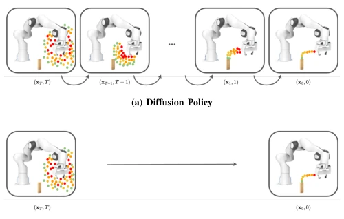
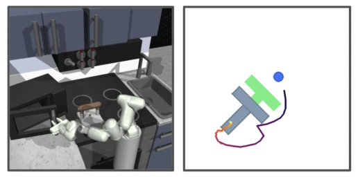
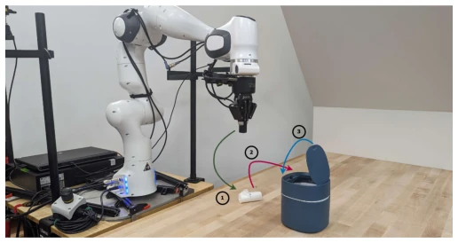
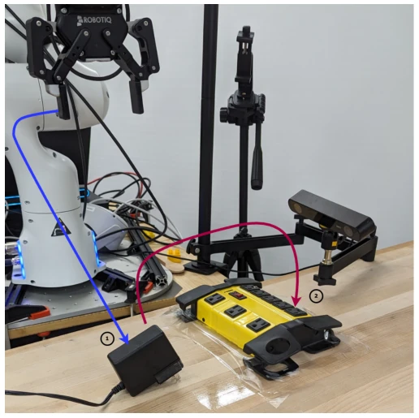
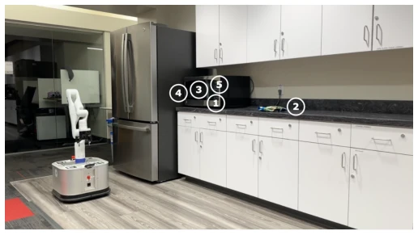
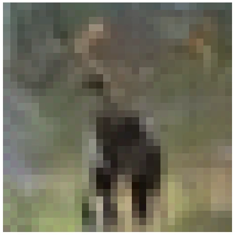

This paper performs a 'slimming surgery' on Diffusion Policy. Although Diffusion Policy achieves SOTA performance, its inference is as slow as an old ox pulling a cart; 100-step denoising is simply a disaster on embedded devices and cannot be used for dynamic tasks. Consistency Policy attempts to convert it to single-step inference via consistency distillation, boosting speed by ten times, claiming to be 'as fast as lightning'. However, the cost is sacrificing the multimodal capability of the diffusion model, akin to swapping a V8 engine for a small-displacement one to save fuel; although it can run, cornering may not be as stable as before. The paper's robustness to teacher model quality is a highlight, eliminating the hassle of hyperparameter tuning, but performance on long horizon tasks still has bottlenecks, and in real deployment, memory and encoder overhead still account for a certain proportion.
Robot systems are often constrained by space, weight, and power consumption, unable to carry high-end GPUs. Diffusion Policy [6], based on DDPM [12], requires 100 steps of denoising, with inference taking approximately 1 second, making it difficult to satisfy the real-time requirements of dynamic tasks (such as balance, navigation). Although ParaDiGMS [27] proposes parallel sampling acceleration, memory demand surges drastically, and it remains slower than single-step prediction. Existing distillation methods mostly target image generation; when directly transferred to robot vision-motor policies, high-dimensional action spaces lead to unstable training or poor results. Therefore, there is an urgent need for a strategy that is both fast and maintains performance, enabling low-compute devices to run diffusion policies and solving real-time control problems under resource constraints.

Fig. 1: Both Diffusion and Consistency Policy work by sampling random actions and denoising them into predictions of actions. xt denotes the current action distribution at a time t ∈[0, T], where larger times correspond to noisier actions. The figure shows distributions of predicted action sequences (indicated by the sequences of red to green dots) at different stages of the respective generation process. a) Diffusion Policy denoises an action sequence over many steps, resulting in high inference costs when deploying the policy on a robot. b) Consistency Policy generates an action sequence in a single step, allowing for much faster inference speeds than Diffusion Policy while retaining competitive success rates.
The overall approach adopts a teacher-student distillation framework. The teacher model is trained based on EDM [13], and the student model is Consistency Policy. The core innovation lies in the adaptation of the CTM objective function: enforcing consistency after denoising at different points on the ODE trajectory. Specific designs include: 1) Reducing initial sampling variance to make outputs closer to the distribution center, avoiding outliers; 2) Presetting discrete time chain steps, prioritizing early intermediate timesteps rather than continuous time subdivision; 3) Discovering that dropout in the s->0 steps of the CTM objective is crucial for the training signal; removing it leads to performance degradation. Inference supports single-step (ultra-fast) or 3-step (accuracy priority) generation, allowing trade-offs between speed and accuracy without additional training. The architecture remains UNet unchanged, only extending the FiLM block to support stop timestep.

Fig. 4: State-based Simulation Tasks. We also evaluate our method on two state-based tasks: Franka Kitchen [10] (Left) and Push-T [6, 9] (Right). Franka Kitchen requires long-horizon and multi-stage performance over a variety of tasks that can be done in any order, while Push-T tests contact-rich manipulation of a T-block using a point force.
Tested on 6 simulation tasks (Robomimic, Push-T, Kitchen) and 3 real-world tasks (Trash Clean Up, Plug Insertion, Microwave). Baselines include DDPM, DDiM, and ParaDiGMS. Metrics include success rate, NFE, and inference time. Results show Consistency Policy inference speed is one order of magnitude faster than the fastest baseline (about 10 times), with success rates comparable or slightly better. Ablation studies show that discrete time chain steps outperform continuous subdivision on difficult tasks, and the strategy is robust to teacher model quality; even if teacher performance drops, the student can still maintain a high success rate. Real-world deployment verifies feasibility on laptop GPUs, but performance is slightly inferior to DDiM in long horizon mobile manipulation tasks.

Fig. 5: Rubbish Clean Up. This task involves: (1) picking up trash, (2) placing the trash in the trash can, then (3) closing the lid of the trash can.

Fig. 6: Plug Insertion. This task involves: (1) picking up a power adapter, (2) bringing it to a plug and inserting it completely

Fig. 7: Microwave. This task involves: (1) navigating to and opening a microwave, (2) navigating to and picking up a bag of broccoli, (3) placing the bag inside the microwave, (4) closing the microwave door, and (5) starting the microwave.Fig. 8: Low initial variance generation. The diffusion model evidently did not learn to predict the score in this region.

Fig. 9: High initial variance generation. The same diffusion model has learned support for this higher variance region.